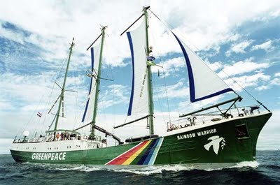
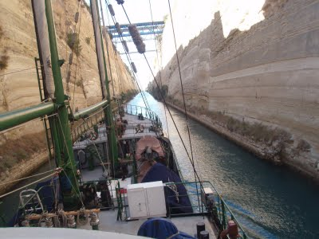

Hariçten Gazel
Ya da, televizyon niyetine İstanbuldan ikiyüzlülük, açgözlülük ve şiddet manzaraları…tuna hızla topuklar!
Ben yine yerimde duramayıp yola koyuldum. Oradan oraya gezerek sürekli yer değiştirme meselesine radikal bir çözüm getirerek sürekli hareket halindeki bir deniz aracına 3 aylığına yerleşerek sorunu kökten çözdüm. Greenpeace’in “Gökkuşağı Savaşçısı” gemisine gönüllü tayfa olarak kabul edilince kafadaki bütün planlar ister istemez bir kenara konarak ivedilikle harekete geçildi.
Ama son yazımdan sonra anlatacak bir sürü şey biriktiğini farkettim. Nerden başlasak? İstanbul, Rize, Antalya hattının sonunda annemin lezzetli yemekleri ve “ev” haliyle keyifli zaman geçirip yine cadı kazanı istanbul’a döndüm geçen ay. Bu seferki proje, topyekün tadilata girişen kız arkadaşıma yardım etmekti. Ãœzeyir Usta ile tanışıklığımız da böyle başladı. Kendisi Çorumlu, her işi yapar bir inşaat ustası olmanın yanında doksan kiloluk vücudunun 30 kilosunu kapsayan göbeğini çatı kapağından oldukça çevikçe geçirebilme yeteneğine sahip. Az çok tadilat işine girişenler bilir. Bu işler adamı kanser eder. Zira çekiç, malayı bi eline alan adam ikincisinde kendini usta diye pazarlamaya başlıyor.
Ahilik, zanaatkarlık gibi bütün etik kurumlar da ne yapsan yedirirsin temalı inşaat sektörüne devredildiği için iş yaptırırken paranoyak olmak gerekiyor. O yüzden bir iş yaptıracaksanız ustadan önce bir aracı ya da müteaahit ile muhatap olmayı tercih ediyor birçok insan. Bu aracı insanların temel fonksiyonu aslında “güven” satmak. Bir işi hakkıyla yapmanın standardı, yapmamanın yaptırımı olmadığından biz her işle birlikte güven ve ruh sağlığı için de para ödüyoruz genelde.
Ben de uzun zamandır oynamadığım eli cebinde gıcık sorular sorup sürekli onun bunun düzeltilmesini isteyen sinir bozucu “iş sahibi” rolünü oynadım. Beğenmedim kendimi ama işler böyle yürüyor bu alemlerde 🙂 Suni krizler yaratıp, ek masraflar üzerinde tartışma hallerinden tutun da, ödeme zamanları veya küçük ayrıntı düzeltmelere kadar baştan sona bir tiyatro oyunundan farksız bence bu işler. Her türlü mal ve hizmet alımlarında bilgi ve tecrübeye sahip olan taraf diğerini en iyi şekilde kazıklamak ya da kandırmak için elinden geleni yapıyor. Ama Ãœzeyir Usta’ya laf ettirmem. Çatı tamirini hakkıyla bitirdi. Kendisini inşaat kalfası olarak niteliyor zaten. Ben ayrılırken daire içi tadilata girişiyordu. Usta arayanlar bana bir eposta atsın telefonunu göndereyim 🙂
Tabi bu gemiye gelme işi çıkınca birsürü kağıt sepet işlerine girişmek gerekiyor. Ben hayatım boyunca vize alma müessesesini aşağılayıcı bulmuşumdur. Gidip o sıralara giren, camın arkasına laf anlatmaya çalışan her insanoğlu da eminim benimle aynı fikirdedir. Bu seferki durağımız yunanistan konsolosluğu idi. Çok zor vize veriyorlar uyarıları ve ekşi sözlkte sayfalarca giriş gözümü korkutmadı değil gitmeden önce. Zaten vizeyi de kolay vermediler ama bol bol aşağılanıp abuk subuk sorulara muhatap olduğum diğer konsolosluklara kıyasla daha insanca bir tavır gördüm. Bu kuzey avrupalı olmak ile akdenizli olmak arasındaki farkmış gibi geldi bana. Derdinizi anlayana kadar anlatabildiğiniz insanların olduğu, iki kelimeden daha uzun cevaplar veren, yaptığı işten nefret etmeyen insanlar gördüm, sevindim. “Gideceğin gemide güzel kızlar var mı?” sorusunu da hollanda konsolosluğundan bekleyemezsiniz herhalde 🙂
İstanbul’daki zamanımın bir bölümünü de Vertigo’nun bilimum televizyon film vs. için yaptığı uçma efektleri işlerine giderek geçirdim. Bunlardan en fazla ağzımı açık bırakan Yaş15 adlı Fox TV yarışma programını anlatmak ister bu deli gönül. Memleketin çeşitli yerlerinden toparlanmış sesi güzel 15 kızımızın şarkılarla yarıştığı bu program; kızlar kadar, hatta daha fazla annelerini öne çıkaran bir konsepte sahip. Lolita modunda görsel tüketim piyasasına sunulan bu gençler, televizyona çıkıp şarkı söyleme ve yeni arkadaşlar edinmekle yetinirler diye gece kıyafetleri ile anneleri devreye sokularak, çeşitli gazlama halleri ile rekabet ve yarışma heyecanı ve sonuçta rating tesis edilmiş. Anne kız arasındaki duygusal dalgalanmalar ise ratinglerin pik yaptığı anlar olsa gerek.
Niye şaşırıyorsun diyenler var duyuyorum. Ama çok fazla televizyon izleyemediğim için bu tür rating şovlarına bağışıklığım yok benim. Diğer yandan da eğlence sektörünün acımasız ikiyüzlülüğünden bihaber, çocukları için güzel birşey yapmaktan başka niyeti olmayan aileleri birebir gözlemlemek çok ağır bir deneyimdi benim için. Bir ara gözlerim yaşardı kalabalığa bakarken. Medeniyet denen şey bu olmasın başka bişey olsun lütfen, ruhumuza tecavüz etmeyin diyesiydim ama oturdum baktım öyle. (ööööyle yabancılaştım kaldım diyim ben sana..)
Tabi insanlık, ikiyüzlülük ve acımasızlıktan bahsedip IMF protestolarından bahsetmemek olmaz. Çok istememe rağmen düzenlenen gösterilerin hiç birine katılamadım açıkçası. Aslen bir gazeteci misali prenses okurlarına günü gününe haber geçme niyetindeydim. Umarım gidenlerin ağzından daha ayrıntılı bir yazı görürüz buralarda. Benim olaylarla ilk alakam cihangirin bir ara sokağında, bir arkadaşımın evinde, günün ilk kahvesiyle uyanmaya çalışırken gerçekleşti. Sesleri duyup pencereden bakarken bir grup eylemcinin sokağımızdan geçtiğini gördük. Ardından da kahraman türk polisi, yetişip 30 kadar eylemci ile sokağın geri kalanını biber gazına tuttu. Gaz maskeleri olduğu için polisimize hatırlatmak isterim: bu attıklarınız belediyenin sinek ilaçlamasına benzemiyor. Can yakıyor, bi ara maskeleri çıkartıp bakasınız!
Eylemcilerin şiddetinden bahsedenleri de duyar gibiyim. Medyanın neleri sulandırıp neleri abarttığını televizyonlarınızı kapatıp internette biraz dolaşırsanız birebir tanıklıklarla bulabileceksiniz. Sokak sokak gazlama işlemini de, vur deyince öldürse de çevik kuvvetin keyfinden yapmadığı aşikar. Eylemcileri de dinlemek lazım diyen başbakanın eylemcilere özel muamele için talimat ve bol bol gaz verdiğini söylemek hiç de kötü bir tahmin olmasa gerek. Şiddetin ne olduğu ve hangi toplumun ne derecede şiddeti tolore ettiği gayet tartışmalı bir konu. Ben açıkçası kendi katıldığım eylemlerde şiddetsizlik tarafında yer alıyorum. Ama bütün dünya halklarının iliğini emen bir uluslararası para kuruluşunu protesto ederken, işlemleri -başka bir dünyada olsak- finansal terörizm olarak nitelenebilecek bankaları ve çok uluslu şirket şubelerini taşlarla hedef almanın kimi eylemciye göre neden şiddet değil de bir nevi meşru müdafa sayılabileceğini anlamakta zorlanmıyorum açıkçası.
Gelgelelim, amacı IMF karşıtı bir kamuoyu oluşturmak olan herhangi muhalif bir örgütün, polis  provakasyonunu ve türk medyasını bile bile bu türden şiddet içeren bir iletişim stratejisini benimseyebileceğini hiç sanımıyorum. Bana kalırsa kitlelere etki etmekten çok, fırsattan istifade, küçük örgütçü hesaplarla, eyleyen grubun özgüveni ve birlik duygusunu pekiştirmeyi amaçlayan girişimler bunlar. Yapanın da vardır bir hesabı diyorum. Polis onların onlar da polisin değirmenine bol bol su taşımaya devam edecek nasıl olsa. Diğer yandan da Direnistanbul gibi son derece yaratıcı ve şiddetsiz grupların da hakkını yememek lazım. Merhaba direnistanbul. Ne güzel oluşumsun sen. Sakın ha kurumsallaşmayasın emi! demek geldi içimden bütün samimiyetimle.
provakasyonunu ve türk medyasını bile bile bu türden şiddet içeren bir iletişim stratejisini benimseyebileceğini hiç sanımıyorum. Bana kalırsa kitlelere etki etmekten çok, fırsattan istifade, küçük örgütçü hesaplarla, eyleyen grubun özgüveni ve birlik duygusunu pekiştirmeyi amaçlayan girişimler bunlar. Yapanın da vardır bir hesabı diyorum. Polis onların onlar da polisin değirmenine bol bol su taşımaya devam edecek nasıl olsa. Diğer yandan da Direnistanbul gibi son derece yaratıcı ve şiddetsiz grupların da hakkını yememek lazım. Merhaba direnistanbul. Ne güzel oluşumsun sen. Sakın ha kurumsallaşmayasın emi! demek geldi içimden bütün samimiyetimle.
Halkımızın olaylara tepkisi ile ilgili de birkaç tanıklıktan bahsetmek istiyorum. Televizyonda gören görmüştür bu tophanedeki olayları. Polisten kaçarak siraselvilerden aşağıya topuklayan yüz kadar eylemci bir anda karşılarında tophane esnafını bulur. Odun, sandalye ve sopalarla silahlanan esnaf PKK’lılar geliyor diye de iyice bilemiştir birbirini. Vatanı savunmanın verdiği güvenle birkaç eylemciyi hastanelik edip geri kalanlarını da gururla püskürtmüşler. Çevik kuvvet zaten yorulmuş koşturmaktan, oturup izlemiş duyarlı halkımızın tepkisini. IMF, bankalar, kriz vs. vurunca memleketin zenginine değil tophaneliye vuruyor aslında. Şimdi bu adam kalkıp IMF’ye hayır diyene saldırıyorsa, tophaneliye veriştirmek yerine, bizim de şapkayı öne koyup bu işte yanlışlık nerede diye bir düşünmeye başlamamız gerekiyor sanıyorum naçizane.
Velhasıl bu İstanbul bana pek yaramadı. Zaten henüz bir buçuk ay olmuş ve herhangi bir yerleşiklik imaresi gösteremezken kuyruğu kıstırıp sıvışmakta buldum çareyi. Yine böyle hariçten gazel okumaya geri döndüm. Güverte tayfası olarak elime boya fırçasını çoktan aldım. Öyle bütün gün denize baktığımız sanılmasın. Bütün gün boya, temizlik, düzenleme ve bilimum işlerle geçiyor.(çaylak sakarlıklarımı bi sonraki yazıya saklıyorum) Yunan adaları açıklarından akdenize doğru salınırken herkese akıl sağlığı diliyorum. Birkaç saat önce dünyanın en dar su yollarında biri olan Korint Kanalından geçtik. İstanbulda darlandıktan sonra bu dar kanalın güzelliği içimi açtı yemin ediyorum. Ben sakin sakin denizde seyrediyorum arkadaşlar. Herkese de tavsiye ediyorum. Gidin bi yere açılın biraz sakinleyin istanbullular. Dünyanın birçok yerinde yaşayarak gezmek kesinlikle istanbulda yaşamaktan daha ucuz benden demesi. Şu saatlerde Greenpeace’in efsanevi gemisi Gökkuşağı Savaşçısı’na yunuslar eşlik ediyor. Yine tepemde gökyüzü altımda deniz var. Daha ne istenir ki hayattan?
tuna


{kind=link}
{kind=link}
{kind=link}
Tunacığım, yolun açık olsun.
Sayende ülkede neler olup bittiğini de duymuş oldum ):) (güleyim mi ağlayayım mı bilemiyorum smiley'i).